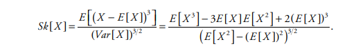
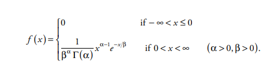
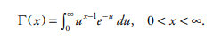
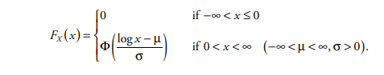

actuarial-statistical-distributions.RmdIn Property Casualty Insurance, policies are written to cover policyholder losses that arise from unpredictable events that occur at unforeseeable times and contain incalculable dollar values (hence the invention of insurance!). Therefore, the field of mathematical statistics and predictive modelling must be utilized by actuaries in order to optimize the insurance system to ensure liquidity and profitability.
Every Property Casualty claim process involves two independent random variables:
These two variables combine to create a third fundamental claim variable: the aggregate-loss random variable. This represents the total claim amount generated by the underlying claim process.
The random variable associated with the size of a claim, or in other words, its dollar amount, is based on the finite population of claims (or a sample of it from a larger population), and always has a discrete distribution. However, it is much more useful to assume a continuous distribution so that various mathematical calculations and integration can be performed on the data.
Claim sizes, by their very nature are always positive, and typically long-tailed meaning larger values are more rare. This means the distribution is not symmetric, but rather is skewed-right or positively skewed.
The skewness of a continuous distribution is calculated by its normalized third central moment, and is a useful measure of distribution symmetry:

Gamma distributions comprise a versatile family of probability distributions, with many applications in statistics and probability. Property/casualty actuaries have found them useful in constructing a variety of insurance models – parameter uncertainty for claim-count distributions, approximation of aggregate-loss distributions, and occasionally as claim-size distributions.
The gamma distribution with positive parameters \(\left(a,b\right)\) is defined by the probability density function:

where the symbol \(\Gamma\) represents the Gamma Function:

Random variable X has a lognormal distribution with parameters (µ, s) if, and only if, log X is normally distributed with mean µ and variance s2. Therefore, the lognormal variable X can be expressed as X = esZ+µ, where Z is the standard normal random variable. As a consequence, the lognormal cumulative distribution function is:

Pareto distributions bear the name of the eponymous Italian sociologist and economist Vilfredo Pareto (1843–1923), who first proposed using them in 1896.
The distribution has long been attractive to property/casualty actuaries.
The computationally simple form of the distribution function—requiring only algebraic calculations and no limit processes—and the typically heavy long tail have made the Pareto family the distributional family of choice to model claim size in a variety of actuarial applications.
Exponential Distribution — size of claims when independent and constant rate
Pareto Distribution — heavy tail claim sizes, for outsized claims
Spliced Distribution — splicing together body and tail claim distribution
Actuarial computation deals with quantifying and redistributing risk in insurance and finance. Risks refer to financial losses and may relate to health, cars, life, and financial investments, etc. Risks are redistributed by grouping many individuals and analyzing the whole group to determine premiums and risk probabilities, etc.
The Wolfram Language provides extensive support for models, data, and computation related to finance, probability, and statistics. In life insurance, important aspects include time value of money with either deterministic or stochastic models of lifetimes. In non-life insurance, important parts include the frequency and size of claims for a group, either short term or long term
Many of the models highlighted here are related to gamma distribution either directly or indirectly. So the catalog of distributions starts with the gamma distribution at the top and then branches out to the other related models.
Mathematically, the gamma distribution is a two-parameter, continuous distribution defined using the gamma function.
The gamma sub-family includes the exponential distribution, Erlang distribution, and chi-squared distribution.
These are distributions that are gamma distributions with certain restrictions on one or both of the gamma parameters.
Other distributions are obtained by raising a distribution to a power; Others are obtained by mixing distributions.
Here’s a listing of the models:
| Deivation | Distribution |
|---|---|
| Gamma Function | Gamma Distribution |
| Gamma Sub-Families | Erlang, Exponential, Chi-Squared |
| Independent Sum of Gammas | Erlang, Hypo-Exponential |
| Exponentiation | Lognormal |
| Raised to a Positive Power | Weibull |
| Raised to a Exponential Power | Transformed Exponential = Weibull |
Actuaries frequently need to fit a parametric distribution model to a set of claims data in order to a) smooth the empirical distribution and b) interpolate or extrapolate between or beyond the existing data.
lossrx provides some useful helper functions meant to aid an actuary in determining an optimal parametric distribution to fit the data at hand:
library(lossrx)
data("claims_transactional")
data("losses")
data("exposures")
latest_eval <- losses |> dplyr::filter(eval_date == max(.data$eval_date))
wc_dat <- latest_eval |> dplyr::filter(coverage == "WC", total_incurred > 0)
al_dat <- latest_eval |> dplyr::filter(coverage == "AL")
describe_distribution <- function(data, ...) {
fitdistrplus::descdist(data = data, boot = 1000, ...)
}
describe_distribution(wc_dat$total_incurred)